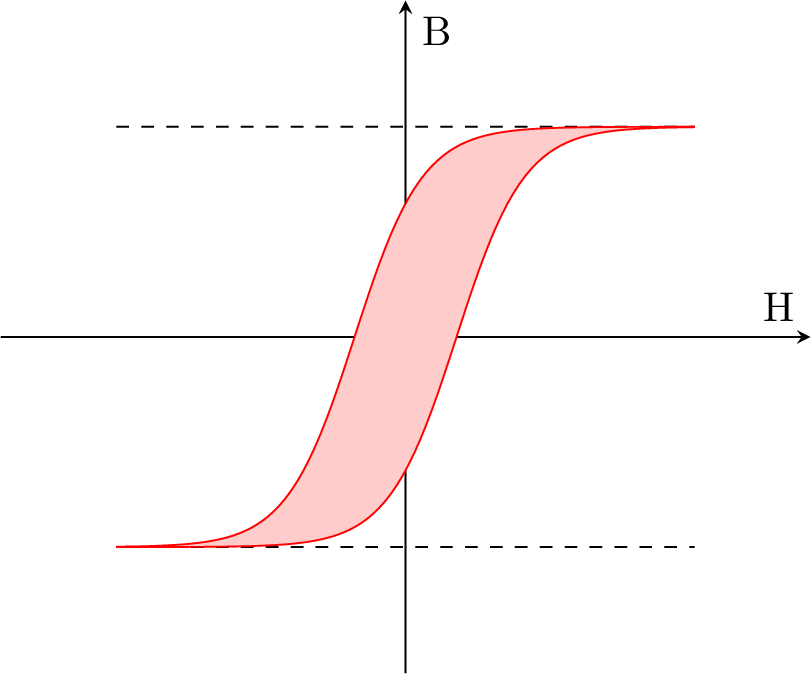

\documentclass{standalone}
\usepackage{pgfplots}
\usepgfplotslibrary{fillbetween}
\begin{document}
\begin{tikzpicture}
\begin{axis}[very thick,
samples = 100,
xlabel = H,
ylabel = B,
xmin = -7,
xmax = 7,
ymin = -4,
ymax = 4,
axis x line = middle,
axis y line = middle,
ticks = none]
\addplot[dashed] plot (\x, 2.5);
\addplot[dashed] plot (\x,-2.5);
\addplot[red, name path=A] plot (\x, {5/(1 + exp(-1.7*\x+1.5))-2.5});
\addplot[red, name path=B] plot (\x, {5/(1 + exp(-1.7*\x-1.5))-2.5});
\addplot[red!20] fill between[of=A and B];
\end{axis}
\end{tikzpicture}
\end{document}Created by David Li